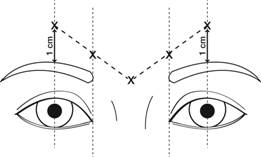

RÉSUMÉ DES CARACTÉRISTIQUES DU PRODUIT
ANSM - Mis à jour le : 06/10/2014
AZZALURE, 10 unités Speywood/0,05 ml poudre pour solution injectable
2. COMPOSITION QUALITATIVE ET QUANTITATIVE
Toxine botulinique de type A* 10 unités Speywood** / 0,05 ml de solution reconstituée.
Flacon de 125 unités.
*Complexe hémagglutinine - toxine A (Clostridium botulinum).
**Une unité Speywood (U) correspond à la dose létale médiane (DL50) chez la souris par voie intrapéritonéale.
Les unités Speywood d'Azzalure sont spécifiques à la préparation et ne sont pas interchangeables avec d'autres préparations de toxine botulinique.
Pour la liste complète des excipients, voir rubrique 6.1.
Poudre pour solution injectable.
La poudre est blanche.
4.1. Indications thérapeutiques
Azzalure est indiqué dans la correction temporaire des rides glabellaires modérées à sévères (rides verticales intersourcillières) observées lors du froncement des sourcils, chez l'adulte de moins de 65 ans, lorsque la sévérité de ces rides entraîne un retentissement psychologique important chez le patient.
4.2. Posologie et mode d'administration
Les unités de toxine botulinique sont différentes selon les produits. Les unités Speywood d’Azzalure sont spécifiques à cette spécialité et ne sont pas interchangeables avec d’autres préparations de toxine botulinique.
Utilisation chez l’enfant :
L’efficacité et la tolérance d’Azzalure chez les sujets âgés de moins de 18 ans n’ont pas été démontrées.
Mode d’administration (voir rubrique 6.6) :
Azzalure doit être administré uniquement par des médecins ayant les compétences adéquates et l’expérience de l’utilisation de ce traitement, et disposant du matériel approprié.
Après reconstitution, Azzalure doit être utilisé uniquement pour le traitement d’un seul patient, au cours d’une seule séance d’injection.
Avant l’injection, le produit doit être reconstitué conformément aux instructions de la rubrique 6.6.
La peau doit au préalable être nettoyée de tout maquillage et désinfectée avec un antiseptique local.
Les injections intramusculaires doivent être effectuées perpendiculairement à la peau, à l’aide d’une aiguille stérile de 29 ou 30 gauges.
Instructions d’administration :
La dose totale recommandée est de 50 unités Speywood d’Azzalure (correspondant à 0,25 ml de solution reconstituée), à diviser en 5 sites d’injection, c’est-à-dire une injection intramusculaire de 10 unités Speywood (correspondant à 0,05 ml de solution reconstituée) à effectuer dans chacun des 5 sites suivants : 2 injections dans chacun des muscles corrugator et une injection dans le muscle procerus près de l’angle nasofrontal, comme illustré dans la figure ci-dessous :

Le repérage anatomique peut être facilité s’il est effectué et palpé lors du froncement maximum des sourcils. Avant injection, il faut placer fermement le pouce ou l’index sous le rebord orbitaire afin d’éviter l’extravasation sous le rebord orbitaire. L’aiguille doit être orientée vers le haut et vers la ligne médiane lors de l’injection. Pour diminuer le risque de ptosis, il faut éviter les injections à proximité du muscle releveur de la paupière supérieure, en particulier chez les patients dotés de puissants complexes abaisseurs des sourcils (depressor supercilii). Les injections dans le muscle corrugator doivent être effectuées dans la partie centrale du muscle, à au moins 1 cm au-dessus du rebord orbitaire.
L’intervalle de temps entre deux séances de traitement dépend de la réponse observée individuellement chez chaque patient par le médecin. Les études cliniques ont démontré un effet optimal pendant une durée allant jusqu’à 4 mois après l’injection. Certains patients étaient encore répondeurs au traitement 5 mois après l’injection (voir rubrique 5.1). L’intervalle de temps entre deux traitements ne doit pas être inférieur à 3 mois.
En cas d’échec thérapeutique ou de diminution de l’effet après des injections répétées, il convient d’envisager d’autres méthodes thérapeutiques. En cas d’échec du traitement après la première séance, il y a lieu :
· d’analyser les causes de l’échec : sélection inappropriée des muscles injectés, technique d’injection, formation d’anticorps neutralisant la toxine ;
· de réévaluer la pertinence du traitement par la toxine botulinique de type A.
- Hypersensibilité au principe actif ou à l’un des excipients mentionnés à la rubrique 6.1.
- En cas d’infection au niveau des sites d’injection proposés.
- En cas de myasthénie grave, de syndrome de Lambert Eaton ou de sclérose latérale amyotrophique.
4.4. Mises en garde spéciales et précautions d'emploi
Azzalure doit être utilisé avec prudence chez les patients présentant un risque ou des signes cliniques de déficit marqué de la transmission neuromusculaire. Ces patients peuvent avoir une sensibilité accrue à ce type de produits, comme Azzalure, susceptible de provoquer une faiblesse musculaire excessive.
Des effets indésirables, pouvant être liés à la diffusion de la toxine à distance du site d'injection, ont été très rarement rapportés après traitement par la toxine botulinique. Les patients traités à doses thérapeutiques peuvent présenter une faiblesse musculaire excessive. L'injection d'Azzalure n'est pas recommandée chez les patients ayant des antécédents de dysphagie ou de pneumopathie d'inhalation.
Les patients et leur entourage doivent être informés de la nécessité de consulter immédiatement un médecin en cas d'apparition de troubles de la déglutition, de l'élocution ou de troubles respiratoires.
Il ne faut jamais dépasser la dose et la fréquence d'administration recommandées pour Azzalure.
Avant toute injection d'Azzalure, il est essentiel d'étudier l'anatomie faciale du patient. Une asymétrie faciale, un ptosis, une dermatochalasie excessive, des cicatrices et des modifications anatomiques résultant d'interventions chirurgicales antérieures doivent être prises en considération.
La prudence s'impose lorsqu'Azzalure est utilisé en présence d'une inflammation au(x) site(s) d'injection proposé(s) ou lorsque le muscle cible présente une atrophie ou une faiblesse excessive.
Comme pour toute injection intramusculaire, le traitement par Azzalure est déconseillé chez les patients présentant un temps de saignement prolongé.
Les injections à intervalles trop rapprochés ou à doses trop élevées peuvent augmenter le risque de formation d'anticorps neutralisant la toxine botulinique. Au plan clinique, la formation d'anticorps neutralisants est susceptible de diminuer l'efficacité des traitements ultérieurs.
Les conséquences de l'injection d'autres toxines botuliniques pendant le traitement par Azzalure sont inconnues; celles-ci doivent donc être évitées.
Ce produit contient une faible quantité d'albumine humaine. Le risque de transmission d'une infection ne peut être totalement exclu après utilisation de dérivés sanguins.
Il est impératif qu'Azzalure ne soit utilisé que pour le traitement d'un seul patient, au cours d'une seule séance.
L'excédent de produit non utilisé doit être éliminé conformément aux instructions de la rubrique 6.6.
Des précautions particulières doivent être prises pour la préparation et l'administration du produit, ainsi que pour l'inactivation et l'élimination de la solution reconstituée non utilisée (voire rubrique 6.6).
4.5. Interactions avec d'autres médicaments et autres formes d'interactions
L'administration concomitante d'Azzalure et d'aminoglycosides ou d'autres agents interférant sur la transmission neuromusculaire (comme par exemple, les agents curarisants) ne doit être effectuée qu'avec prudence car l'effet de la toxine botulinique de type A peut être potentialisé.
Aucune étude d'interaction n'a été réalisée. Aucune autre interaction cliniquement significative n'a été rapportée.
Azzalure ne doit pas être utilisé pendant la grossesse à moins d'une nécessité absolue. Il n'existe pas de données suffisamment pertinentes concernant l'utilisation de la toxine botulinique de type A chez la femme enceinte. Des études effectuées chez l'animal ont mis en évidence une toxicité sur la reproduction à fortes doses (voir rubrique 5.3.). Le risque potentiel en clinique n'est pas connu.
Il n'existe pas de données sur le passage d'Azzalure dans le lait maternel. L'utilisation d'Azzalure est déconseillée pendant l'allaitement.
4.7. Effets sur l'aptitude à conduire des véhicules et à utiliser des machines
Il existe un risque potentiel de faiblesse musculaire localisée ou de troubles visuels liés à l'utilisation de ce médicament, susceptible d'altérer temporairement la conduite de véhicules ou l'utilisation de machines.
Plus de 1 900 patients ont reçu Azzalure au cours des différentes études cliniques.
Dans les études pivotales, plus de 1 500 patients présentant des rides glabellaires modérées à sévères ont été traités à la dose recommandée de 50 unités, au cours d’études en double aveugle contrôlées versus placebo et d’études en ouvert à long terme.
Dans les études pivotales en double aveugle versus placebo à dose unique, 22,3 % des patients traités par Azzalure à la dose recommandée (50 U) et 16,6 % de ceux ayant reçu le placebo ont présenté une réaction liée au traitement et/ou à la technique d’injection. Dans l’étude de phase III ouverte, à long terme, au cours de laquelle les patients ont reçu plusieurs cycles d’injection, 26 % des patients ont présenté au moins une réaction liée au traitement et/ou à la technique d’injection, après la première injection. La fréquence de ces réactions a diminué avec la répétition des cycles d’injection.
Les effets les plus fréquents liés au traitement et/ou à la technique d’injection sont des céphalées et des réactions au site d’injection. Ces effets se produisent généralement au cours de la première semaine suivant le traitement et sont transitoires. La plupart des effets décrits ont été réversibles et d’intensité légère à modérée.
La fréquence des effets indésirables est classée comme suit :
Très fréquent (> 1/10), fréquent (≥ 1/100 à < 1/10), peu fréquent (≥ 1 000 à < 1/100), rare (≥ 1/10 000 à 1/1 000), très rare (< 1/10 000), fréquence indéterminée (ne peut être estimée sur la base des données disponibles).
|
Affections du système nerveux |
Très fréquent Céphalées Fréquent Parésie faciale (surtout au niveau des sourcils) Peu fréquent Sensations vertigineuses |
|
Affections oculaires |
Fréquent Asthénopie, ptosis, œdème des paupières, larmoiement, sécheresse oculaire, fasciculation musculaire (contraction involontaire des muscles autour des yeux) Peu fréquent Troubles visuels, vision trouble, diplopie, troubles des mouvements oculaires |
|
Affections de la peau et du tissu sous-cutané |
Peu fréquent Prurit, éruption cutanée Rare Urticaire |
|
Troubles généraux et anomalies au site d’administration |
Très fréquent Réaction au site d’injection (par exemple, érythème, oedème, irritation, éruption cutanée, prurit, paresthésie, douleur, gêne, picotements et ecchymose) |
|
Affections du système immunitaire |
Peu fréquent Hypersensibilité |
Des effets indésirables, liés à la diffusion des effets de la toxine à distance du site d’injection, ont été très rarement rapportés avec la toxine botulinique (faiblesse musculaire excessive, dysphagie, pneumopathie d’inhalation d’évolution fatale dans quelques cas) (voir rubrique 4.4).
Déclaration des effets indésirables suspectés
La déclaration des effets indésirables suspectés après autorisation du médicament est importante. Elle permet une surveillance continue du rapport bénéfice/risque du médicament. Les professionnels de santé déclarent tout effet indésirable suspecté via le système national de déclaration : Agence nationale de sécurité du médicament et des produits de santé (ANSM) et réseau des Centres Régionaux de Pharmacovigilance – Site internet : www.ansm.santé.fr
Aucun cas de surdosage n'a été rapporté pendant les études cliniques.
L'administration de doses excessives de toxine botulinique est susceptible de produire une faiblesse neuromusculaire associée à divers symptômes. Si le surdosage induit une paralysie des muscles respiratoires, des mesures de réanimation respiratoire peuvent s'avérer nécessaires. En cas de surdosage, une surveillance médicale du patient doit être instaurée pour rechercher d'éventuels symptômes de faiblesse musculaire excessive ou de paralysie musculaire. Un traitement symptomatique sera mis en œuvre si nécessaire.
Les symptômes de surdosage ne se manifestent pas obligatoirement juste après l'injection.
Une hospitalisation doit être envisagée chez les patients présentant des symptômes d'intoxication à la toxine botulinique de type A (par exemple association d'une faiblesse musculaire à une ptose, une diplopie, des troubles de la déglutition et du langage ou une parésie des muscles respiratoires).
5. PROPRIETES PHARMACOLOGIQUES
5.1. Propriétés pharmacodynamiques
Classe pharmacothérapeutique: autres myorelaxants à action périphérique
Code ATC: M03AX01
Le principal effet pharmacodynamique de la toxine botulinique de type A est lié à la dénervation chimique du muscle traité, conduisant à une diminution mesurable du potentiel d'action musculaire provoquant une diminution localisée, voire une paralysie, de l'activité musculaire.
Données cliniques
Pendant la phase de développement clinique d'Azzalure, plus de 2600 patients ont été inclus dans différents essais cliniques.
Dans ces études, 1907 patients présentant des rides glabellaires modérées à sévères ont été traités à la dose recommandée de 50 unités Speywood, dont 305 au cours de deux études pivotales de phase III en double aveugle versus placebo, et 1200 au cours d'une étude de phase III à long terme en ouvert, à doses répétées. Les autres patients ont été traités dans le cadre d'études de recherche de dose ou d'études supportives.
Le délai médian d'apparition de la réponse a été de 2 à 3 jours après le traitement, l'effet maximum étant observé au 30ème jour. Dans les deux études pivotales de phase III contrôlées versus placebo, les injections d'Azzalure ont significativement diminué la sévérité des rides glabellaires pendant une durée allant jusqu'à 4 mois. L'effet était encore significatif au bout de 5 mois dans une de ces deux études pivotales.
Trente jours après l'injection, l'évaluation des investigateurs a montré que 90 % (273/305) des patients avaient répondu au traitement (c'est-à-dire rides glabellaires absentes ou peu marquées lors du froncement maximum des sourcils), contre 3% (4/153) des patients sous placebo. Cinq mois après l'injection, 17% (32/190) des patients traités par Azzalure étaient toujours répondeurs au traitement versus 1% (1/92) sous placebo dans l'étude concernée. L'auto-évaluation des patients, 30 jours après le traitement à froncement maximum des sourcils, a montré un taux de réponse de 82 % (251/305) avec Azzalure et de 6 % (9/153) avec le placebo. La proportion de patients présentant une amélioration de deux grades, selon l'évaluation des investigateurs à froncement maximum des sourcils, a été de 77 % (79/103) dans la seule étude pivotale de phase III ayant évalué ce critère.
Un sous-groupe de 177 patients présentait des rides glabellaires modérées ou sévères au repos avant le traitement. L'évaluation de cette population par les investigateurs, 30 jours après le traitement, a montré que 71 % (125/177) des patients avec Azzalure étaient considérés comme répondeurs au traitement, versus 10 % (8/78) sous placebo.
L'étude à long terme, en ouvert à doses répétées, a montré que le délai médian d'apparition de la réponse de 3 jours se maintenait lors de la répétition des cycles de traitement. Le taux de patients, à froncement maximum des sourcils, ayant répondu au traitement selon le jugement de l'investigateur 30 jours après le traitement, s'est maintenu au cours des cycles ultérieurs (taux compris entre 80 et 91 % pour les 5 cycles). Le taux de réponse au repos après administrations répétées était cohérent avec les résultats obtenus lors des études à dose unique, avec 56 à 74 % des patients traités par Azzalure considérés par l'investigateur comme étant répondeurs, 30 jours après le traitement.
Aucun des critères d'évaluation clinique ne comportait une évaluation objective du retentissement psychologique.
5.2. Propriétés pharmacocinétiques
Il n'est pas attendu qu'Azzalure soit présent dans le sang périphérique à des concentrations mesurables après injection IM à la dose recommandée. Par conséquent, aucune étude pharmacocinétique n'a été réalisée sur Azzalure.
5.3. Données de sécurité préclinique
Les études de reproduction chez le rat et le lapin ont montré une sévère toxicité maternelle associée à des pertes d'implantation après administration de fortes doses. Aucune toxicité embryofœtale n'a été observée chez le lapin et le rat à des doses correspondant respectivement à 60 et 100 fois la dose recommandée chez l'homme (50 U). Aucun effet tératogène n'a été mis en évidence chez ces espèces. Chez le rat, la diminution de la fertilité observée chez le mâle et la femelle était due à la paralysie musculaire secondaire à l'administration de fortes doses, qui interférait sur la copulation.
Dans une étude de toxicité chronique chez le rat, on n'a montré aucune toxicité systémique à des doses correspondant à 75 fois la dose recommandée chez l'homme (50 U), réparties de façon égale entre les muscles fessiers droit et gauche.
Les études de toxicité aiguë, de toxicité chronique et de tolérance locale au site d'injection n'ont pas mis en évidence d'effets indésirables locaux ou systémiques inattendus après administration de doses pertinentes en clinique.
Lactose monohydraté.
Ce médicament ne doit pas être mélangé avec d'autres médicaments, à l'exception de ceux mentionnés dans la rubrique 6.6.
Solution reconstituée:
D'un point de vue microbiologique, le produit doit être utilisé immédiatement.
Toutefois, la stabilité physicochimique a été démontrée pendant 4 heures entre 2°C et 8°C.
6.4. Précautions particulières de conservation
A conserver au réfrigérateur (2°C - 8°C).
Ne pas congeler.
Pour les conditions de conservation du médicament reconstitué, voir rubrique 6.3.
6.5. Nature et contenu de l'emballage extérieur
125 unités Speywood sous forme de poudre dans un flacon (verre de type I), fermé par un bouchon (halobutyle) et une capsule de scellement (aluminium).
Boîte de 1 ou 2 flacon(s).
Toutes les présentations peuvent ne pas être commercialisées.
6.6. Précautions particulières d’élimination et de manipulation
Les instructions d’utilisation, de manipulation et d’élimination doivent être strictement respectées.
La reconstitution doit être réalisée conformément aux règles de bonnes pratiques, notamment concernant les conditions d’asepsie.
Azzalure doit être reconstituée avec une solution de chlorure de sodium à 9 mg/ml (0,9 %) pour préparations injectables.
Comme indiqué dans le tableau de dilution ci-dessous, le volume requis de solution injectable de chlorure de sodium à 9 mg/ml (0,9%) doit être prélevé à l’aide d’une seringue afin d’obtenir une solution reconstituée limpide ayant une concentration de 10 U/0,05 ml.
|
Volume de solvant à utiliser (solution de chlorure de sodium à 0,9 %) pour un flacon contenant 125 U |
Concentration obtenue (nombre d’unités par 0,05 ml) |
|
0,63 ml |
10 U |
Pour mesurer précisément le volume à utiliser pour la reconstitution (0,63 ml), il convient d’utiliser des seringues de 1 ml, de type seringue à insuline, qui comportent des graduations de 0,1 ml et 0,01 ml.
RECOMMANDATIONS POUR L’ÉLIMINATION DU MATÉRIEL CONTAMINÉ
Immédiatement après utilisation et avant élimination, la solution reconstituée d’Azzalure non utilisée (dans le flacon et/ou la seringue) doit être inactivée, avant élimination, en ajoutant 2 ml d’une solution diluée d’hypochlorite de sodium à 0,55 ou 1 % (solution de Dakin).
Les flacons, seringues et matériels utilisés ne doivent pas être vidés et doivent être placés dans des récipients adaptés, pour être éliminés conformément à la réglementation locale en vigueur.
RECOMMANDATIONS EN CAS D’INCIDENT LORS DE LA MANIPULATION DE LA TOXINE BOTULINIQUE
· Toute projection doit être essuyée : avec un matériel absorbant imbibé d’une solution d’hypochlorite de sodium (eau de Javel) en cas de produit lyophilisé, ou bien avec un matériel absorbant sec en cas de produit reconstitué.
· Les surfaces contaminées seront nettoyées avec un matériel absorbant, imbibé d’hypochlorite de sodium (eau de Javel), puis séchées.
· En cas de bris de flacon, procéder comme indiqué ci-dessus, ramasser soigneusement les particules de verre et essuyer le produit, en évitant les coupures cutanées.
· En cas de contact avec la peau, laver la zone touchée avec une solution d’hypochlorite de sodium (eau de Javel) puis rincer abondamment avec de l’eau.
· En cas de contact avec les yeux, rincer abondamment avec de l’eau ou avec une solution ophtalmique de lavage oculaire.
· En cas de contact du produit avec une blessure, une coupure ou une piqûre, rincer abondamment avec de l’eau et prendre les mesures médicales appropriées en fonction de la dose injectée.
Ces instructions d’utilisation, de manipulation et d’élimination doivent être strictement respectées.
7. TITULAIRE DE L’AUTORISATION DE MISE SUR LE MARCHE
IPSEN PHARMA
65 quai Georges Gorse
92100 Boulogne Billancourt
8. NUMERO(S) D’AUTORISATION DE MISE SUR LE MARCHE
· 393 419-2 ou 34009 393 419 2 7: 125 unités Speywood sous forme de poudre dans un flacon (verre de type I), fermé par un bouchon (halobutyle) et une capsule de scellement (aluminium) - Boîte de 1.
· 393 420-0 ou 34009 393 420 0 9: 125 unités Speywood sous forme de poudre dans un flacon (verre de type I), fermé par un bouchon (halobutyle) et une capsule de scellement (aluminium) - Boîte de 2.
9. DATE DE PREMIERE AUTORISATION/DE RENOUVELLEMENT DE L’AUTORISATION
[à compléter par le titulaire]
10. DATE DE MISE A JOUR DU TEXTE
[à compléter par le titulaire]
Sans objet.
12. INSTRUCTIONS POUR LA PREPARATION DES RADIOPHARMACEUTIQUES
Sans objet.
Liste I.
Médicament soumis à prescription médicale restreinte.
Réservé à l'usage professionnel selon l'article R 5121-80 du Code la Santé Publique.
Prescription réservée aux spécialistes en chirurgie plastique, reconstructrice et esthétique, en dermatologie et en chirurgie de la face et du cou et chirurgie maxillo-faciale et en ophtalmologie.